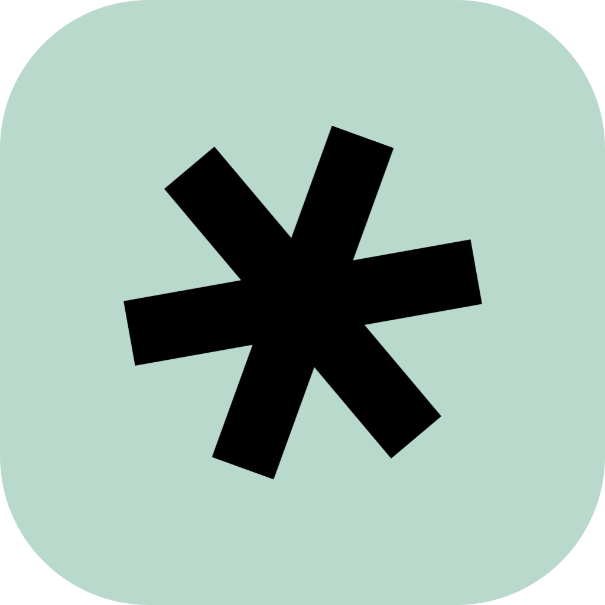

Direct, by design
WebRTC streams straight between the two machines. Peer discovery runs in parallel over BitTorrent trackers and Nostr relays — no server in the middle.

2peerShare your screen with one other person. Video and audio go straight between your two machines — no server in the middle, no sign-up.
Not a meeting room. 2peer links two people and gets out of the way: share your ID, they accept, you broadcast.
WebRTC streams straight between the two machines. Peer discovery runs in parallel over BitTorrent trackers and Nostr relays — no server in the middle.
Your identity is a random 12-character ID, stored locally. Share it, regenerate it, done.
Full-screen the peer's view on a second monitor, or pin it as picture-in-picture while you work.
Closing the window drops 2peer to the tray, line still ready. Launches at login, wakes on an incoming call.
* Stream quality is uncapped by the app — in practice it's limited only by your and your peer's connection.
An Electron app with a React renderer. Here's what governs the connection and the picture.
| Resolution | Frame rate | Target bitrate |
|---|---|---|
| 720p HD | 60 fps | 6 Mbps |
| 1080p FHD | 60 fps | 12 Mbps |
| 1440p QHD | 30 / 60 fps | 24 Mbps |
| 2160p UHD | 30 fps | 50 Mbps |
Trystero — BitTorrent trackers + Nostr relays in parallel, zero signaling server.
restartIce() on dropApple silicon & Intel · .dmg installer
Download for macOS or download the .zipWindows 10/11 · 64-bit · NSIS installer
Download for Windows browse all assetsPrefer to choose manually? Open the releases page on GitHub →